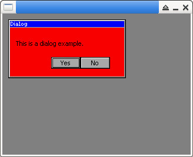

參考資訊：
https://github.com/piyushpandey013/ucGUI
https://github.com/yongzhena/ucgui-linux
main.c
#include "GUI.h"
#include "MULTIPAGE.h"
static GUI_WIDGET_CREATE_INFO info[] = {
{ FRAMEWIN_CreateIndirect, "Dialog", 0, 10, 10, 200, 100, WM_CF_SHOW, 0},
{ TEXT_CreateIndirect, "This is a dialog example.", 0, 10, 20, 150, 20, 0, GUI_TA_LEFT },
{ BUTTON_CreateIndirect, "Yes", 100, 70, 50, 50, 20, BUTTON_CF_SHOW, 0 },
{ BUTTON_CreateIndirect, "No", 101, 120, 50, 50, 20, BUTTON_CF_SHOW, 0 },
};
static void WndProc(WM_MESSAGE* pMsg)
{
GUI_RECT rt = { 0 };
switch (pMsg->MsgId) {
case WM_PAINT:
WM_GetInsideRect(&rt);
GUI_SetBkColor(GUI_RED);
GUI_ClearRectEx(&rt);
break;
default:
WM_DefaultProc(pMsg);
}
}
int main(int argc, char *argv[])
{
GUI_Init();
GUI_SetBkColor(GUI_GRAY);
GUI_Clear();
GUI_ExecDialogBox(info, GUI_COUNTOF(info), WndProc, 0, 0, 0);
return 0;
}
編譯、執行
$ gcc main.c -o main libucgui.a -IGUI_X -IGUI/Core -IGUI/Widget -IGUI/WM -lSDL $ ./main
